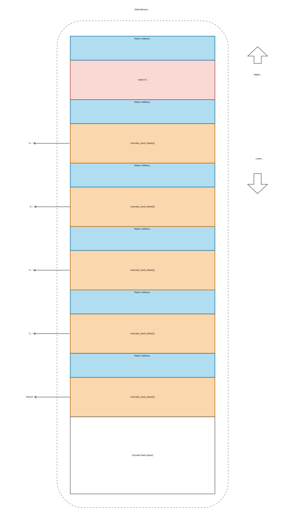
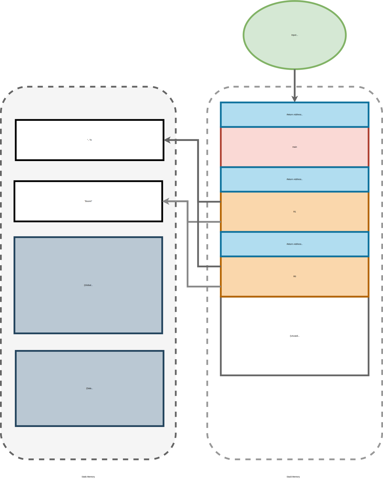

Assurance Perspective: Stack Safety
We'll learn about stack and static memory by hardening a small program. Our first version is vulnerable: an attacker can exhaust system memory and crash the application ("denial-of-service" or DoS) by providing specific inputs. Our patched version will comply with MISRA Rule 17.2 (essentially "no recursion", introduced in Chapter 3):
[RR, Rule 17.2] Functions can't call themselves recursively (directly or indirectly)1
That'll remediate the vulnerability and increase availability. And the rule/pattern is relevant to any programming language that supports recursion! You can readily apply this rule in Python, Java, Go, Swift, TypeScript, etc.
More generally, we're exploring a platform-agnostic and language-agnostic pattern for increasing the stack safety of a given function.
Recursion and Static Call Graphs
The Theory: Inter-procedural CFGs section of the Appendix briefly examines recursion in the context of graphs many static analysis tools rely on. Its a short, optional aside we'd recommend after finishing this section - for those curious.
The Stack
Stack memory supports one of programming's most fundamental abstractions: the function (aka procedure, method, or subroutine). Functions are called with parameters, perform some computation, and optionally return a result. Thus hardware need a mechanism to2:
-
Pass control - Set the Instruction Pointer (IP) to the address to the function called and, when it's done, set it back to the statement following the call.
-
Pass data - Provide parameters as input, and return a result. Either as a new value or a
mut-ation of input(s). -
Allocate and deallocate working memory - The function called needs to acquire space for its local variables on entry, and release said space on return.
Mechanically, stack memory supports all three requirements by just two simple operations: push and pop. It works like the Last In First Out (LIFO) data structure of the same name: we can push items (addresses, variables, etc) and entire function's working memory blocks (called "frames") onto the stack and pop only from the top (most recently pushed item/frame).
The goal of stack memory is to support fast runtime allocation and deallocation for data whose size is fixed (known at compile time). So:
-
Stack frames are chunks of memory "scratch space" needed for a single function to execute. A frame includes all the fixed-size local variables used by a function.
-
The push operation (allocation) corresponds to a function call. Whenever you call a named function in your program, a new frame gets pushed onto the stack3. The called function (e.g. callee) gets scratch memory for its local variables, distinct from the caller's frame (which sits below it on the stack). The runtime stack grows downward, toward lower addresses.
-
The pop operation (deallocation) corresponds to a function return. Once a function exits (due to control reaching the
returnkeyword or the end of function scope), its frame is discarded. To save time, data is not cleared/erased unless the programmer explicitly calls a function like C'smemset4 or uses a crate like Rust'szeroize5. For speed,SPis simply incremented instead. Accessing the old (lower address) data is no longer legal once its containing frame has been popped.
Why is the stack fast?
Unlike heap memory, the mechanics of stack memory are both directly supported in hardware and compile-time decidable.
Remember: the "stack pointer" is a CPU register (
SP). Optimized hardware tracks where the current stack top is. Compilers emit dedicated CPU instructions to push [to] and pop [from] the stack efficiently. We glance at these instructions in an assembly snippet below.
Lets visualize how a code snippet uses the stack, to make the push/pop discussion more tangible.
#[inline(never)]
fn recursive_count_down(x: usize) -> usize {
// Base case
if x == 0 {
println!("Boom!");
return x;
// Recursive case
} else {
println!("{x}...");
return recursive_count_down(x - 1);
}
}
#[inline(never)]
fn square(x: usize) -> usize {
x * x
}
fn main() {
let args: Vec<String> = std::env::args().collect();
// 1st arg is binary name, e.g. "./stack_example 2"
assert!(args.len() <= 2, "Too many arguments - enter one number");
let x = args
.iter()
.nth(1)
.expect("No arguments")
.parse()
.expect("Please provide a number");
let _ = recursive_count_down(square(x));
}-
The
mainfunction parses a single commandline argument into ausizevariablex. It'll terminate with an error message if no arguments are entered, more than 2 arguments are entered, or the sole argument isn't a positive number. -
recursive_count_down(square(x));calls one function to square the input argument, then another to print a count down sequence - fromx^2to0. -
We're interested in how this program uses stack memory at runtime, adding the attribute
#[inline(never)]to ensure the compiler allocates a stack frame each time eitherrecursive_count_downorsquareis called.- "Inlining" is an opportunistic compiler optimization can avoids function call overhead, including stack frame allocation and caller-register preservation 3. It's not always applicable and as programmer we don't directly decide where it is. So forgoing it is a realistic case to prepare for.
If run with cargo run -- 2, this program outputs:
4...
3...
2...
1...
Boom!
So what happened in stack memory during that execution?
Each function called allocates its own stack frame.
There's one for main, one for square, and one for each recursive call to recursive_count_down.
-
Before every frame, the return address (that of the next statement to execute, where the CPU should point
IPafter a call completes) is also stack-pushed (down). -
Certain calling conventions might require function arguments to be pushed onto the stack before that function's frame, others use registers for the first several arguments as an optimization (and stack push the remainder).
- For simplicity, We'll omit this detail, and a similar push/pop mechanisms for saving/restoring callee-saved registers.
With argument passing and register saving omitted, our stack when Boom! is printed looks like:

Exhausting a Process's Maximum Stack Space
The crate for the above program is located at code_snippets/chp4/stack_example.
Can you find an input that crashes the binary with the following error?
Where does this error come from?
thread 'main' has overflowed its stack
fatal runtime error: stack overflow
The binary search algorithm ("binary" meaning "two", not "compiled binary") is one way to find a large enough input.
But guessing a sufficiently large number is probably easiest.
Once you've found a cargo run command that triggers the crash, write it down.
You'll use that same input/attack to prove a fix is indeed viable.
Recall MISRA Rule 17.2 ("no recursion"). By applying this guidance, we can maintain this program's exact interface (command-line functionality, print output) but increase its memory-utilization robustness by bounding space complexity.
First, let's understand the core problem: exponential, O(n^2), stack space utilization. Attacker input exercises asymmetric control over stack memory usage. We scale relative to input integer ("R" indicates a recursive function):

A Universal Failure Mode
Recursion risks stack exhaustion for any Type-I, II, or III system. Of any CPU architecture.
Hardening for Stack Safety
To address MISRA 17.2, replace recursive_count_down with a new iterative_count_down implementation:
#[inline(never)]
fn iterative_count_down(x: usize) {
for i in (0..=x).rev() {
match i {
i if i == 0 => println!("Boom!"),
_ => println!("{i}..."),
}
}
}Our stack scaling is now constant, O(1), for all inputs ("I" indicates an iterative function):
To validate the program will no longer terminate on memory exhaustion, try re-running it with the crashing input you discovered earlier. Isn't seeing that success satisfying, as an engineer?
Before closing, let's understand how static memory supports our program's static strings.
Rust != Stack Safety
Rust is memory-safe for the most part. It's a massive leap over incumbents. But stack safety, the ability to detect a stack overflow caused by recursion or otherwise, is platform-specific.
When you found a crashing input, your OS did the detection and preemptively killed your process. Now
rustcdid help - it inserted stack probes at compilation time, enabling immediate passing of control to the OS if a stack data write limit is hit at runtime.But many
#![no_std]systems don't support this detection feature. Had our program been running on Type-III microcontroller, the overflow could have gone undetected - our function could have corrupted whatever data happened to be stored past a pre-set stack limit. On some systems, that might even include a bootloader!MISRA C 17.2 a is valuable guideline for {platform,language}-agnostic stack safety. It can help eliminate overflow potential in a program.
But we still need to ensure worst case stack usage, for any iterative call-chain, doesn't exceed the capabilities of a target platform. So complete stack safety is an ambitious goal.
cargo call-stack6 can help.
Static Memory
Static memory contains global data.
Not just global variables in the source code (though those do live in static memory), hardcoded strings and constant data (e.g. file bytes baked in at compile-time via the include! macro[^IncludeMacro]) end up there too.
For Rust specifically:
-
Static memory additionally holds any variable declared with the
statickeyword. -
Counter-intuitively, items with a
'staticlifetime may or may not be stored in static memory. -
The
constkeyword allows values to be computed at compile time. The resulting value might be inlined directly wherever the variable name is used, ending up encoded within the executable instruction stream - not in a static memory location.
Your program's executable code technically also resides in static memory, though the above diagram uses a separate box to distinguish it.
Some static memory sections are read-only, others are writeable - this is relevant to exploitation, but let's ignore this detail for now and focus on what "global" actually entails:
-
Data in static memory is available for the entire lifetime of the program. From the time it starts to the time it terminates.
-
Static memory is shared between threads. This has synchronization dangers (e.g. data races) and performance-degrading workarounds (e.g. global locks/mutexes). But it's also useful and convenient.
What are threads?
Processes have a lightweight alternative: threads. Multiple threads co-exist within the address space of one process. Each thread has its own stack (see the previous section's file-to-process diagram).
Multithreading has two important advantages over multiprocessing:
Scheduling efficiency - the OS kernel can schedule threads more efficiently, thanks to the ability to share certain kernelspace data structures and CPU-level optimizations (e.g. Intel's "hyper-threading"[^HyperThread] technology).
Data passing between concurrent components - threads can share data amongst themselves more easily and efficiently than processes, they often don't need to wait for or rely on the kernel as an intermediary for data passing. Static memory is one direct means, since it's shared among the multiple threads within a single process.
Let's quickly peak at simplified/unoptimized assembly (the instruction stream a CPU crunches) for function recursive_count_down.
We won't go line-by-line.
But a few details will help us better understand memory layout.
First, recall the source code:
#[inline(never)]
fn recursive_count_down(x: usize) -> usize {
// Base case
if x == 0 {
println!("Boom!");
return x;
// Recursive case
} else {
println!("{x}...");
return recursive_count_down(x - 1);
}
}Using https://godbolt.org to generate assembly (your results may vary depending on compiler version7) with the -C "opt-level=z" flag (optimizing for small code size - and also human readability):
example::recursive_count_down:
push rbx
sub rsp, 80
mov qword ptr [rsp + 8], rdi
test rdi, rdi
je .LBB0_1
lea rbx, [rsp + 8]
lea rax, [rsp + 16]
mov qword ptr [rax], rbx
lea rcx, [rip + .L__unnamed_1]
lea rdi, [rsp + 32]
mov qword ptr [rdi], rcx
mov qword ptr [rdi + 8], 2
and qword ptr [rdi + 32], 0
mov rcx, qword ptr [rip + core::fmt::num::imp::<impl core::fmt::Display for usize>::fmt@GOTPCREL]
mov qword ptr [rax + 8], rcx
mov qword ptr [rdi + 16], rax
mov qword ptr [rdi + 24], 1
call qword ptr [rip + std::io::stdio::_print@GOTPCREL]
mov rdi, qword ptr [rbx]
dec rdi
call qword ptr [rip + example::recursive_count_down@GOTPCREL]
jmp .LBB0_3
.LBB0_1:
lea rax, [rip + .L__unnamed_2]
lea rdi, [rsp + 32]
mov qword ptr [rdi], rax
mov qword ptr [rdi + 8], 1
lea rax, [rip + .L__unnamed_3]
mov qword ptr [rdi + 16], rax
xorps xmm0, xmm0
movups xmmword ptr [rdi + 24], xmm0
call qword ptr [rip + std::io::stdio::_print@GOTPCREL]
xor eax, eax
.LBB0_3:
add rsp, 80
pop rbx
ret
.L__unnamed_3:
.L__unnamed_4:
.ascii "...\n"
.L__unnamed_1:
.quad .L__unnamed_3
.zero 8
.quad .L__unnamed_4
.asciz "\004\000\000\000\000\000\000"
.L__unnamed_5:
.ascii "Boom!\n"
.L__unnamed_2:
.quad .L__unnamed_5
.asciz "\006\000\000\000\000\000\000"
What does this assembly mean?
We don't teach assembly in this book to keep scope in check. But being able to read assembly can be useful in a pinch for systems programming. And it's a pre-requisite to in-depth binary exploitation.
To get up to speed for the binary attacker side of things, consider Practical Binary Analysis: Build Your Own Linux Tools for Binary Instrumentation, Analysis, and Disassembly8, Appendix A: A Crash Course on x86 Assembly is a quick primer for Intel machines.
For our purposes, note two instructions above:
sub rsp, 80(near start) - push frame, decrement Stack Pointer (SP) by 80 bytes.add rsp, 80(near end) - pop frame, increment Stack Pointer (SP) by 80 bytes.
There's a lot going on in that assembly snippet. One detail relevant to understanding static memory: each frame did not allocate a unique copy of each string - only a short (host integer width) pointer to a static memory location holding the ASCII string.
Visually, this means multiple recursive frames all referenced the same strings stored for printing output:

What does that imply in terms of stack exhaustion?
-
Degradation Ratio - Static memory has a nearly (sans pointer width)
1:Ndrag on stack memory utilization, where:-
1is the single copy of a static data item. -
Nis recursion depth for references to1item. -
1:Nhas no effect on algorithmic space complexity (unlike stack-memory'sN:Ndata).
-
-
Exhaustion Defense - Hardening against stack overflow DoS is effective at the level of a language-agnostic pattern (MISRA C 17.2). Because it impacts overall (stack and static) space complexity at the hardware level.
-
We can enjoy function-granular assurance with respect to a fatal runtime failure vector!
-
For whole-program assurance: this specific bug class is eliminated if we also compute worst-case stack utilization and ensure each target platform supports it6.
-
Takeaway
Stack memory, our focus here, is ubiquitous and provides the runtime scaffolding for a fundamental programming abstraction: function calls. Mechanically it works like the Last In First Out (LIFO) data structure of the same name.
Stack safety, a guarantee that stack space won't be exhausted at runtime, is enabled by removing recursion. By adhering to MISRA C Rule 17.2. But we'd still need to compute worst-case stack utilization for the entire, iterative program to make any platform-specific stack safety claim.
Static memory holds global variables and constant data. It doesn't meaningfully impact stack safety. Outside of initialization, possible mutex(s), and data-cache hit rate: static memory may have little impact on runtime.
In the next section, we'll explore breaking more general kinds of safety - memory safety and type safety - from the perspective of an attacker.
-
MISRA C: 2012 Guidelines for the use of the C language in critical systems (3rd edition). MISRA (2019). ↩
-
[PERSONAL FAVORITE] Computer Systems: A Programmer's Perspective. Randal Bryant, David O'Hallaron (2015). ↩
-
This isn't always true. One possible optimization a modern compiler may make is called "function inlining" - pulling the function body of the callee into the function body of the caller, as if the programmer had written a single, long function. For functions called in a "hot loop" (many loop iterations executed), this can increase performance by avoiding the small overhead associated with pushing a stack frame each loop iteration to make a call. The tradeoff is binary size: each source-level call site to the inlined function must be a full copy of the code (since no central location is called into). Though seldom necessary, Rust's
inlineattribute macro9 allows you to control this specific behavior. ↩ ↩2 -
`cargo-call-stack. japaric (Accessed 2023). ↩ ↩2
-
We used
rustcv1.71 with-C "opt-level=z". ↩ -
[PERSONAL FAVORITE] Practical Binary Analysis: Build Your Own Linux Tools for Binary Instrumentation, Analysis, and Disassembly. Dennis Andriesse (2018). ↩
-
The Rust Reference: The
inlineattribute. The Rust Team (Accessed 2022). ↩